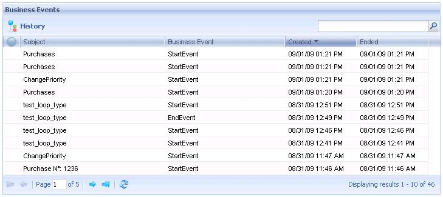

Through this application the process administrator user can monitor the business events of the different processes existing in the workflow system. The following figure shows the Business Events application interface:  History: It allows to view the process history. |
| Backlinks | |
| HowTo: Using GXflow Entry Point User Control | Process Manager |